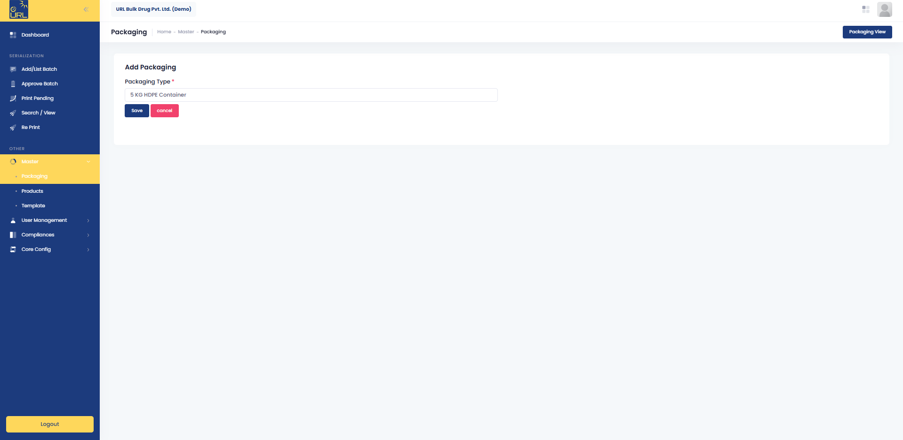
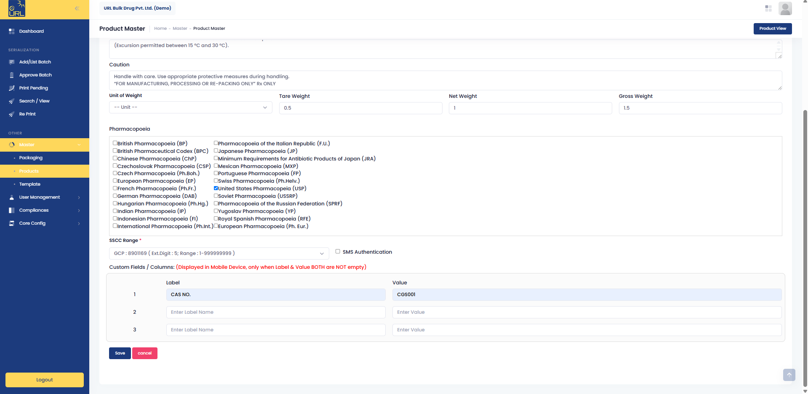
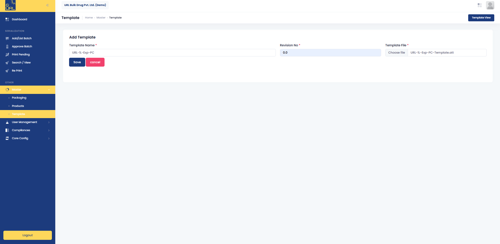
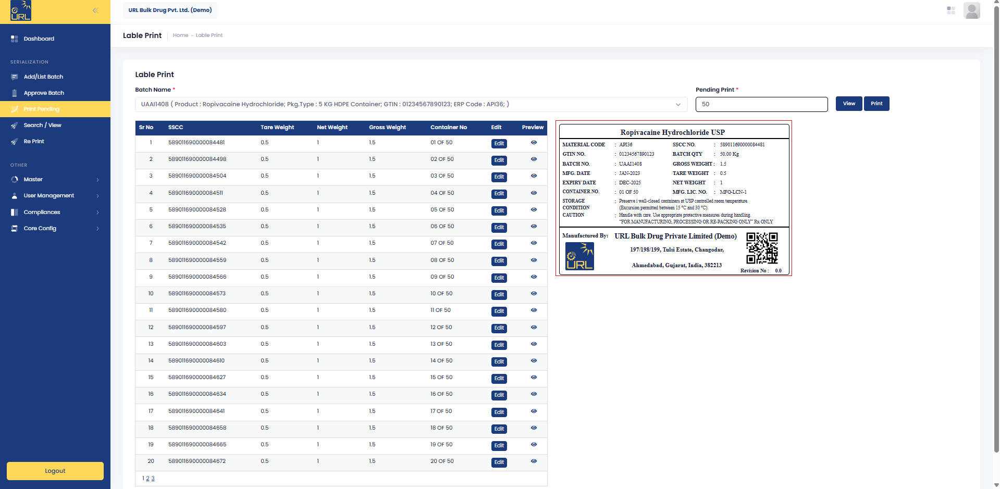
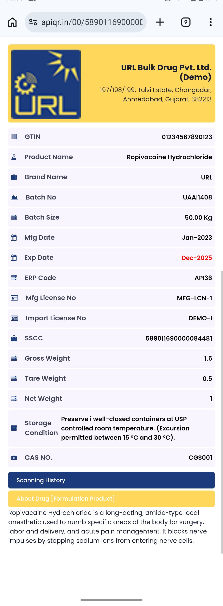

Role-based user management
Administrator, Supervisor and Operator roles with granular, customisable rights — or clone permissions from an existing user or template in seconds.
APIQR · the platform
A cloud platform built for one job: turning your batch data into G.S.R. 20(E)-compliant labels and QR codes, with the approvals, controls and audit trail a pharmaceutical quality team actually needs. Nothing to install, nothing to change on the line.
What makes it different
Plenty of manufacturers got through their first compliance deadline with a template and a lot of care. These are the five places that approach starts to fail.
Administrator, Supervisor and Operator roles with granular, customisable rights — or clone permissions from an existing user or template in seconds.
From batch creation through multi-level approval to print management and reprints — the whole packaging and labelling workflow is digitised and traceable.
Generate and manage Global Trade Item Numbers, National Drug Codes and Serial Shipping Container Codes to GS1 international standards, from centrally controlled ranges.
Every user action is logged in real time. Password policies, audit logs and production reports are downloadable on demand — audit-ready by default, not on request.
Track pending prints, generate labels in bulk, and reprint only with an authorised user login — the guard against unauthorised label duplication.
Inside the platform
APIQR runs in production today at login.apiqr.in. These are the screens your quality and packing teams will work in.




Modules
Everything below ships as standard. There is no tiering and no module you have to discover you needed after signing.
| Module | What it does |
|---|---|
| Master | Define packaging types, product master data — GTIN, NDC, pharmacopoeia, storage conditions, weights — and label templates. |
| Add / List Batch | Create and manage batches with batch size, manufacturing date, expiry or retest date, label quantity and process order number. |
| Approve Batch | Multi-level batch approval with approve, reject and cancel controls, each captured with audit-logged reasoning. |
| Print Pending | View and print pending serialized labels batch-wise, with editable weight and container details. |
| Search / View | Instantly search batch status, print history and user activity across all products. |
| Reprint | Secure, authenticated reprinting of individual labels by SSCC or batch number. |
| User Management | Create users, assign role-based rights, and manage access templates. |
| Compliances | Configure password policies, review audit logs and generate production reports. |
| Core Config | Manage company details and SSCC number ranges centrally, so serials never collide. |
How it works
Your team enters what it already knows, an authorised user approves it, and the platform does the rest.
Company code, username and password. Browser only — nothing installed on the shop floor.
Packaging types, product data — GTIN, NDC, pharmacopoeia, storage conditions — and label templates.
Batch number, size, manufacturing and expiry or retest dates, label quantity, template. Two minutes of typing.
An authorised user approves, rejects or cancels — with a recorded reason. Once approved, the batch locks.
GS1 SSCC codes are issued automatically, usually within five to ten minutes, one per container.
Print pending labels in bulk, reprint securely when you need to, and every action stays in the audit trail.

Anyone with a phone camera · apiqr.in · no app to install
Who it is for
Anyone required to comply with G.S.R. 20(E) on material manufactured in India — which is everyone producing API for the domestic market.
Where GTIN and NDC-standard serialization is expected by international buyers alongside domestic compliance.
Running multiple product lines for multiple clients, each with their own label specimens and data requirements.
The people who have to produce audit-ready documentation on demand, and who own the consequences when it is not there.
Why URL Aseptic Automation
APIQR is built by URL Aseptic Automation — an engineering company with in-house software, automation and end-of-line expertise, serving pharmaceutical manufacturers against US DSCSA, EU FMD, Russia, China, Uzbekistan, Brazil and Turkey mandates.
Industrial barcoding, product authentication and traceability inside a compliance framework — the whole business, not a product line.
Machines, automation, software and cloud from a single vendor. No integration finger-pointing when a line stops.
A proven base across global serialization mandates, not a first deployment learning on your batch.
A dedicated team follows every new notification, so your compliance keeps pace without you chasing it.
No hidden charges, and no surprise line items once the project is underway.
Packing runs at night and on weekends. So does the team that supports it.
Because APIQR is cloud-native and pre-built to G.S.R. 20(E), there is no server procurement, no line modification and no bespoke development between you and a compliant label.
Comparison against publicly published implementation timelines for competing pharmaceutical track-and-trace platforms.Send us a single product and batch, and we will show you the finished compliant label and the scan result in a 30-minute call. If it does not fit how you work, you will know inside half an hour.